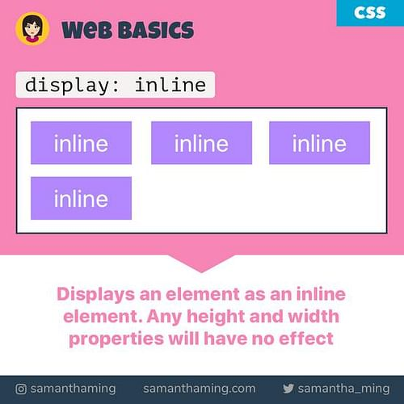
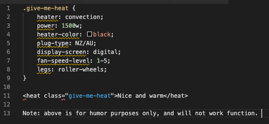

inline-block; - property value will do what inline does but also allow you to set hight/width or margin-top/margin-bottom values.
The element will display as inline level block containers.
inline-block; - property value will do what inline does but also allow you to set hight/width or margin-top/margin-bottom values.
The element will display as inline level block containers.
Where the content is held in websites (HTML files), each element is considered a block as either a rectangle or square. Each of these elements also have their own display property which helps define the content the way in which we want it to be presented. Commonly, these properties are defined in a seperete CSS file (which is linked to the content HTML file) to help keep a tidy workflow and seperate componants which make a website. CSS files help style the content in the HTML file. Understanding inline and inline blocks are the basics to laying out a website.
display: - property will specify display behavior of that element and helps with controlling the layout. Other property values (other than inline/inline block) can also be used with this property. Another way to look at this is like when buying a heater you have multiple types. The value 'heater' defines the task of heating just like 'display' defines the task of display behavior.
 inline; - property value will display contents/element on the same line instead of starting a new line. It will only use as much width relative to its content, only starting a new line if the current line has run out of space. Setting a width/height value or margin-top/margin-bottom value with display: inline; will not have any effect to the element.
inline-block; - property value will do what inline does but also allow you to set hight/width or margin-top/margin-bottom values.
The element will display as inline level block containers.
To summerise, display will specify the display behavior to the set vaule while the inline/inline-blocks are considered values that specify display behaviors (two of many other properties). Inline will display contents in the same line until its full but not take into account width/height or margin-top/margin-bottom values. Inline-block will do exactly what inline does but allow width/height or margin-top/margin-bottom values to be applied. Going back to our heater theory discussed earlier, display can be seen as heater and inline/inline-block can be seen as types of heaters that conduct the heat eg. convection, radiant, micathermic which help define the way the heat will be conducted. Some will be more efficient than others depending on the setting. The same applies for coding display: inline; or display: inline-block;.
Nimesh Govind
Dev Academy Student | Auckland, New Zealand
Phone 027 859 4798
Email nimeshgovind74@gmail.com